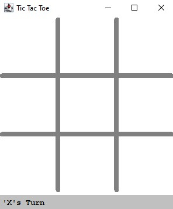
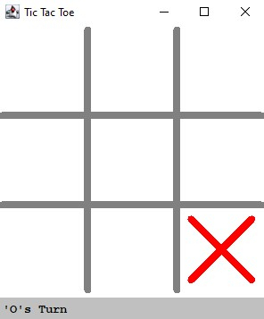
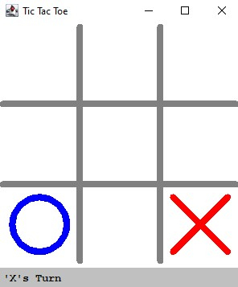
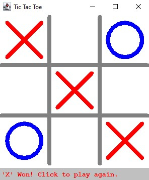
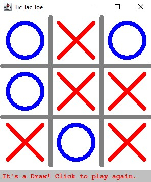

Tic-Tac-Toe Game
Project Background
This project involved a scenario of taking over from another programmer to complete the build of a Tic-Tac-Toe game.
Tic-Tac-Toe involves two players taking turns to mark noughts or crosses on a 3x3 grid. The first player to place three of their marks in a horizontal, vertical or diagonal row wins.
Discovery
This game needed to be a simplified graphical version where a JPanel component needed to be implemented to create a canvas that would allow noughts and crosses to be painted on.
In the game, crosses always needed to begin. The game needed to check after each move whether a player had won. Players needed to restart the game by clicking any cell after the game ended with a winner or a draw.
The other programmer's unfinished source code was provided and included ‘TODO’ comments which hinted at the code that needed to be written.
Comments, explaining my approach and what the code does, needed to be included when adding additional code.
Design
A UML class diagram was created with the draw.io application to design each class and indicate the relationship between them.
Development
The game was written in Java and developed within the Eclipse IDE for Java Developers.
Testing
User acceptance testing was carried out to ensure the game functioned as intended.
Deployment
The source code was uploaded to a GitHub repository for this project.
Take a Closer Look
The screenshots below show what the game looks like in action.
Screens for User Interaction
Simplified Graphics

Crosses Begin

Noughts Taking a Turn

Ending with a Win

Ending in a Draw
